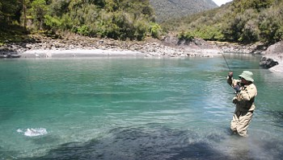
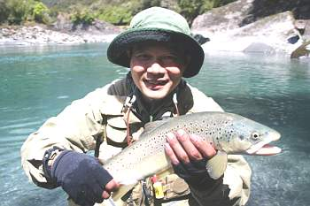
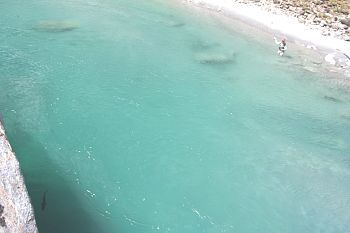

釣行日誌 ＮＺ編 「翡翠、黄金、そして銀塊」
大淵にて、絶好調！
2010/11/23(TUE)-3
午後二時頃となり、僕とディーンは、遡行している左岸側に大岩のあるポイントに出くわした。大岩の前面はオープンに広がった大きな淵となっており、岩に登ると淵全体を見渡すことができそうだった。ディーンの後をついて、そろそろと慎重に岩棚へへばりつき、腕と足とでよじ登る。てっぺんからは、絶好の眺望が楽しめた。と、ディーンが指を差したのでそちらを見ると、淵のど真ん中、主流が流れ込む中心に、型の良い鱒が定位しているのがはっきりと見えた。あれが次のターゲットである。水面近くではないが、しきりと餌を捜しているのが見て取れた。ディーンは指示を出すために岩棚の上に残り、僕は鱒の位置をよく覚えてから、再び慎重に水際まで降りる。ちょっと遠くなったが、足場の良いポジションを確保し、水中に立ち込む。いよいよキャストだ。見る角度が変わったが、魚の場所の見当は付いた。しかし魚影そのものは見えていない。勘を頼りの第一投は、14番のロイヤルウルフである。バックキャストに支障のないのを確かめ、少なめのフォルスキャストでフライを運ぶ。水面に落ちたロイヤルウルフが主流に乗って流下し、それらしいあたりまで来ると頭上からディーンが高い声で叫んだ。
「来た来た！ 近づいていくぞっ！」
次の瞬間、鱒の頭が水面を割り、ぱっくりとフライにかぶさった。一、二の三。落ち着いて数えてロッドを立てる。どうやらフッキングは上手くいったようだ。異変を感じた鱒が淵の深みめがけて突っ走り、ドラグが鳴り出す。足場は良いし、障害物も無い。淵の中なので下流に遁走される危険もない。十分にファイトを楽しみ、心地よい鱒の抵抗をロッドに感じる。
『やったぞ！ ファーストキャストでストライクだっ！』
内心デレデレにほくそ笑みながら魚と闘っていると、ディーンが岩から降りて来て、ランディングの準備に入る。直線的にラインを引き込んでいた鱒が、グネグネと反転をし始める。さすがの鱒も徐々に疲れが出てきたようだ。

水面にまで寄ってきた鱒が、暴れてしぶきを上げる。水中に立ち込んできたディーンが、絶妙のタイミングで鱒をすくい上げる。
「やったーっ！」
「おめでとう！」
二人はがっしりと握手を交わし、肩をたたき合った。第一投がどんぴしゃりの位置へ届くなんて、まぐれもまぐれ、出来過ぎた感のある１尾であった。

まぐれの１尾の興奮も冷めやらぬまま、再び大きな岩盤をよじ登って行くと、ディーンが「静かに！」というジェスチャーを示した。また鱒が居るのだなと思って慎重に近づいてゆくと、居るわ居るわ、上流側の流れ込み、眼下の岩肌に張り付くようにして大物ブラウンが悠然と泳いでいる。

鰐部さんはまだ少し下流を釣っていたので、彼が位置に付くまでに、ディーンは自分のデジタル一眼を取り出して鱒の写真をたくさん写し始めた。僕も鱒を見に岩盤の縁まで近づいていったが、思った以上に水面までの高さがあり、なかなか恐ろしいポイントだった。にもかかわらず、ディーンは平気な顔でシャッターボタンを押し続けている。
いよいよカツが対岸のキャストできるポイントまでやって来た。砂浜の続く右岸側から水中に立ち込み、太腿くらいまで水に浸かってのキャストである。黒い影まではおおよそ25メートルほど。僕ならば簡単に白旗を揚げる距離である。

鱒は、主流のぶつかる岩盤の縁に定位しており、明らかに水面上の流下物に興味を示している。ときおり浮上して、その大きな白い口をぱっくりと開け、何ものかを飲み込んでいる。ドライフライが流れれば一発で食い付くであろうシチュエーションである。この状況下で、カツが何を選択したのか、遠目では分からないけれど、いよいよ彼がキャスティングを始めた。ところがただでさえ距離の長いキャストである上に、魚の手前には流れの速い主流が横切っており、着水したフライが鱒の位置まで流れていく間にすぐにドラッグがかかってしまう。おまけにスペースの必要なバックキャストのための空間には、すぐそばまで灌木の繁みが広がっている。これは難しい魚になるように思えた。
釣行日誌ＮＺ編 目次へ
サイトマップ
ホームへ
お問い合わせ